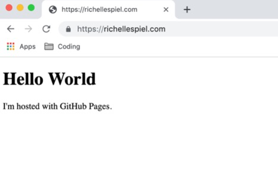
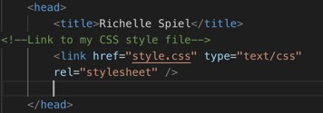

01 - HTML/CSS - THIS WEBSITE!



After coding a few games in Scratch which was so fun, I felt like
I was ready to take on a more legitmate coding language to expand my skills.
Initially I started to learn Python, but I really wanted to build something that I could link to,
something that I could use as a future portfolio. So I decided that building my own website
from scratch via HTML & CSS would be a great start!
Keep reading to learn the 13 steps I took to this website. Below is a list of the main resources which
have helped me, however I will link to other articles that helped me with some tricky details
(like the navigation bar) throughout this page.
Resources
I’ll take you through the general order in which I built the different parts
of this website in 13 steps. I will mention that I wish I had more screen
shots from the beginning! So for those of you building a website from scratch,
take screen shots! It’s really fun to think about how far you have come.
Unfortunately, I do not have screen shots for every step.
-
Basic Understandings: My first step was to gain a basic
understanding of how to build a website. I did this by reading through
the first parts of John Duckett's book, HTML & CSS, a couple times until I felt
like I had a decent understanding of how websites work - I learned
that I needed a domain name and I needed a host and those are 2
completely separate things.
-
Domain Name: I bought my domain: richellespiel.com from google
domains for $12 per year. *Note - you can host your site on
GitHub pages without using a custom domain name, it's not required
but it was something I wanted, so I went for it.
-
Free Web Host: Next, I searched for a host for my site.
I actually had a hard time finding a host and spent a week or two
stuck right here, wondering how do people ever write websites from
scratch! Every host I researched had all these templates with click
and fill boxes (like wordpress etc.). I didn’t want this! I wanted
to write all the code myself. Finally I stumbled onto a blog
post where I learned about GitHub Pages. That was a huge relief.
GitHub pages is free, you can host a static website through your
GitHub account and you can use a custom domain! I felt like it was
a little tricky to get everything working correctly. I used these
resources to work it all out:
➡️ GitHub Pages
➡️ Using custom domain for GitHub pages
- a Medium article by Hossain Khan
➡️ VS Code - I used the VS Code text
editor to write my code.
➡️ I used GitHub Desktop to push my changes to my GitHub repository.
While I list this in one step, in reality, this process took me a while to
work out all these details. There was a lot of researching and trial
and error.
After all these logistics, after LOTS of trial and error, when I finally
typed in my domain and saw this, I laughed with relief. I was so proud! 😂
-
Linking to pages: Now that I knew where to write my code (in VS Code),
and how to upload it to be hosted on GitHub (via GitHub Desktop), I needed to
start to lay out the map for the site by adding different pages. I decided to
build a Bio page, and a resources page. Pg. 80 of the Duckett book was
helpful. At this stage, the links to these new pages were listed in bullet point
format on the home page. Each page is a separate HTML document.
-
CSS: Once I had a few different pages on my site, I decided that I was
ready to add some style. I started reading about CSS and began googling
things like "best website colors" which returned some great resources and
hexcodes (color codes) for me to use on my site! I followed the advice in the
Duckett book, and made my CSS style sheet a separate file from my HTML and
linked to it.
At this point I also started experimenting with adding a Navigation Bar at the top.

-
Navigation Bar & Footer: Starting with the footer, I decided that this would
help my site look more legitimate. After trying 1 tutorial that didn’t work for me,
I found thisthis tutorial from W3Schools about footers
was very helpful. I then decided to tackle the Navigation Bar. This was a little
more tricky for me. I started out using this tutorial from W3 Schools.
And then once I added my dropdown menu, I re-wrote it all in div elements
to make it work better (link to that later on).
Having the nav bar and footer was a great feeling!! 🎉🎉🎉 It really made the site
look and function so much more professionally! The Nav Bar was even responsive -
where if you hovered over one of the links it would change color! I was very proud.
-